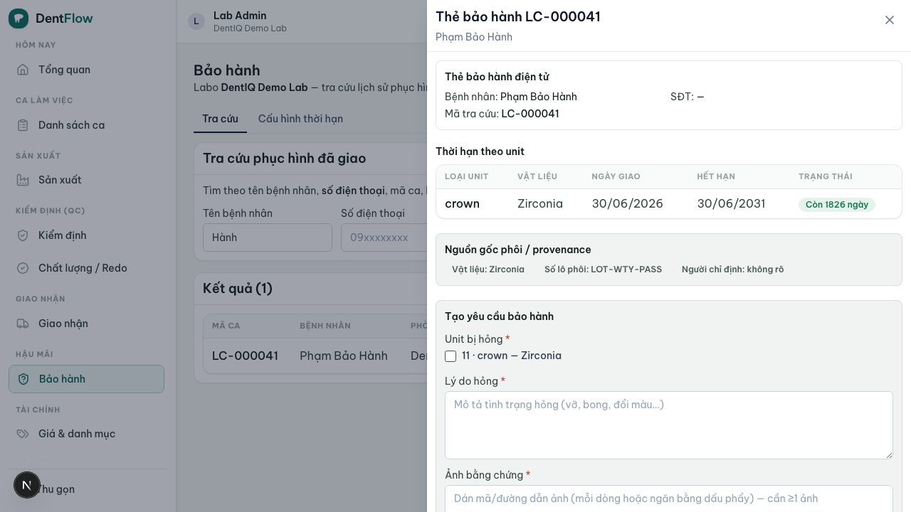
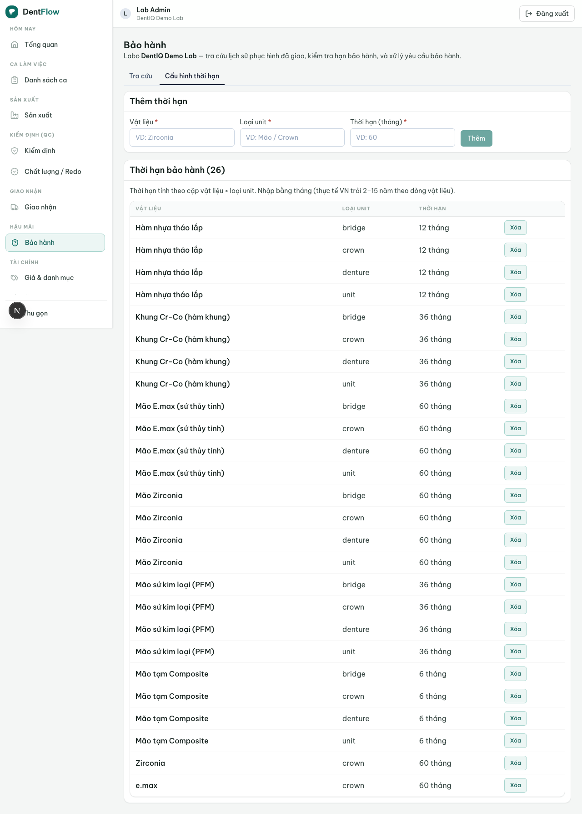

Bảo hành & tra cứu
Thẻ bảo hành giấy ở VN chứng nhận phôi, không chứng nhận thành phẩm — một tấm thẻ thật vẫn có thể đi kèm phục hình dùng phôi sai. Gắn provenance vào case là moat mà thẻ giấy không tạo được.
Tính năng cho phép labo tra cứu nhanh lịch sử một phục hình đã giao để biết còn hay hết hạn bảo hành, rồi tạo yêu cầu bảo hành đưa case quay lại sản xuất khi đủ điều kiện. Nó tác động lên cạnh delivered → warranty → in_production | closed của vòng đời case; luật chuyển trạng thái là SSOT ở tài liệu workflow.

Tra cứu theo material & thời hạn
Tra cứu một case hỗ trợ ít nhất 4 khóa (BR-03): tên bệnh nhân, số điện thoại bệnh nhân, mã case, và khoảng ngày giao. SĐT là khóa thực dụng nhất ở VN vì phòng khám hay nhớ số khách thay vì mã case. Kết quả hiển thị trạng thái bảo hành (còn hạn / hết hạn + số ngày còn lại).
Thời hạn bảo hành tính theo cặp (material × loại restoration / unit) mà labo tự cấu hình (BR-01). Thực tế VN trải 2–15 năm theo dòng vật liệu:
| Dòng vật liệu | Thời hạn tham khảo |
|---|---|
| Nhựa tạm | ~6 tháng – 1 năm |
| PFM / sứ kim loại | ~2–3 năm |
| Zirconia phổ thông | ~5–7 năm |
| Zirconia / sứ cao cấp | tới 10–15 năm |
Vì vậy thời hạn phải nhập được bằng năm hoặc tháng, không giả định một con số cứng. Mốc bắt đầu tính là ngày giao (khi case vào delivered); hết hạn = ngày giao + thời hạn (BR-02). Case nhiều unit khác vật liệu tính hạn theo từng unit.
Lịch sử case & provenance
Khi xem hoặc duyệt một case bảo hành, hệ thống hiển thị material provenance gắn trên case (BR-10): nhà sản xuất, dòng / số lô phôi, ai chỉ định material / shade. Đây là bằng chứng chống khoảng trống thẻ-thật-phôi-giả: provenance gắn vào case chứ không vào tờ thẻ rời, nên không thể tách khỏi lịch sử thật. Case cũ thiếu provenance được đánh dấu "thiếu nguồn gốc" thay vì tự bịa.

Tạo claim bảo hành
Chỉ tạo claim được khi case đang ở delivered và còn trong hạn (BR-04); case closed phải mở lại về delivered trước. Mọi claim bắt buộc ghi lý do hỏng + bằng chứng (≥1 ảnh); khi duyệt phải ghi bên chịu trách nhiệm — labo / clinic / hao mòn tự nhiên (BR-05). Claim được duyệt đưa case warranty → in_production quay lại đúng công đoạn cần làm lại; claim bị từ chối (hết hạn / ngoài phạm vi) đưa case warranty → closed kèm lý do (BR-06).
Case hết hạn vẫn tra cứu được nhưng nút tạo claim bị khóa (BR-08); nếu vẫn cần sửa thì xử lý như đơn mới (work order mới), không phải claim — màn tra cứu vẫn hiển thị đủ lịch sử + provenance để báo giá có cơ sở. Một case có thể có nhiều lần bảo hành nối tiếp, mỗi lần là một bản ghi riêng nhưng không gia hạn mốc — đồng hồ vẫn chạy từ ngày giao gốc, trừ khi labo cấu hình chính sách "làm lại reset hạn" (BR-11).
Cấu hình điều khoản bảo hành
Labo cấu hình bảng thời hạn theo cặp material × unit — nguồn dữ liệu là lab slip / case (bệnh nhân, unit, material, ngày giao, cam kết bảo hành), không nhập trùng dữ liệu bảo hành tách rời case (BR-12). Đây là bảng đặc thù domain labo VN, DentIQ không có nên phải dựng riêng.

Bảo hành khác redo: redo là làm lại do lỗi phát hiện trước / ngay khi giao; warranty là hỏng sau khi đã giao, trong thời hạn cam kết. Ngày giao thiếu / sai trong dữ liệu cũ thì không tự suy diễn hạn — đánh dấu "cần xác minh ngày giao" trước khi cho tạo claim. Claim trùng (báo lại cùng một hỏng hóc) gộp vào claim đang mở, không tạo bản sao.